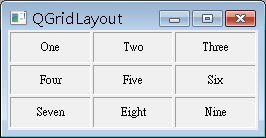
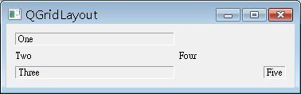

QGridLayout版面配置會如同棋盤般排列Widget，先來看個簡單的例子：
#include <QApplication>
#include <QWidget>
#include <QGridLayout>
#include <QLabel>
int main(int argc, char *argv[]) {
QApplication app(argc, argv);
const QString texts[] = {"One", "Two", "Three",
"Four", "Five", "Six",
"Seven", "Eight", "Nine"};
QWidget *window = new QWidget;
window->setWindowTitle("QGridLayout");
window->resize(250, 100);
QGridLayout *layout = new QGridLayout;
layout->setSpacing(2);
layout->setMargin(2);
for(int i = 0, k = 0; i < 3; i++, k = k + 3) {
for(int j = 0; j < 3; j++) {
QLabel *label = new QLabel(texts[k + j]);
label->setFrameStyle(QFrame::Panel + QFrame::Sunken);
label->setMinimumSize(55, 0);
label->setAlignment(Qt::AlignCenter);
layout->addWidget(label, i, j);
}
}
window->setLayout(layout);
window->show();
return app.exec();
}在版面配置的程式碼部份，setSpacing()與setMargin()設定每一個Grid的空間與彼此之間的邊界，再來利用迴圈將QLabel加入QGridLayout，程式中設定了QLabel的最小尺寸、顯示位向與樣式，注意在使用addWidget()方法時，可以指定您要將元件加入至哪一列（Row）哪一行（Column）。
程式執行時的參考畫面如下：

QGridLayout中不一定要每個格子依序填滿，只要指定想填入的位置，沒有指定的部份會自動空下，以下的程式是個簡單的示範：
#include <QApplication>
#include <QWidget>
#include <QGridLayout>
#include <QLabel>
int main(int argc, char **argv) {
QApplication app(argc, argv);
QWidget *window = new QWidget;
QGridLayout *layout = new QGridLayout;
layout->setColumnMinimumWidth(0, 200);
layout->setColumnMinimumWidth(1, 100);
QLabel *label1 = new QLabel("One");
label1->setFrameStyle(QFrame::Panel + QFrame::Sunken);
QLabel *label3 = new QLabel("Three");
label3->setFrameStyle(QFrame::Panel + QFrame::Sunken);
QLabel *label5 = new QLabel("Five");
label5->setFrameStyle(QFrame::Panel + QFrame::Sunken);
layout->addWidget(label1, 0, 0);
layout->addWidget(new QLabel("Two"), 1, 0);
layout->addWidget(label3, 2, 0);
layout->addWidget(new QLabel("Four"), 1, 1);
layout->addWidget(label5, 2, 2);
window->setLayout(layout);
window->show();
return app.exec();
}
您也可以使用setColumnMinimumWidth()來設定指定行的最小寬度，或使用setRowMinimumHeight()來設定指定列的最小高度，行列的索引都是由0開始，與二維陣列的指定方式相同。
程式的執行畫面如下所示：

利用指定行列置放元件的特性，您就可以進行如下的畫面設計：

（圖片取自Qt官方的 QGridLayout 類別說明）